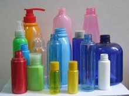
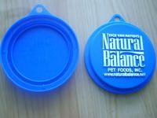
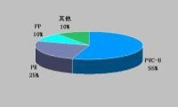
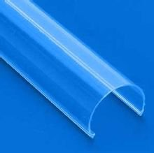
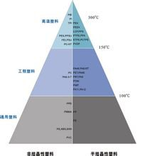
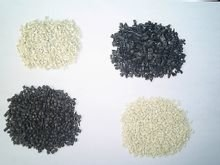
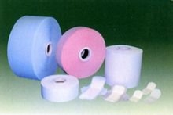

塑料
基本简介
塑料塑料（英语：Plastic），是指以高分子量的合成树脂为主要组分，加入适当添加剂，如增塑剂、稳定剂、阻燃剂、润滑剂、着色剂等，经加工成型的塑性（柔韧性）材料，或固化交联形成的刚性材料。塑料是20世纪的产物，自从它被开发以来，各方面的用途日益广泛。
构成成分
合成树脂
合成树脂是塑料的最主要成分，其在塑料中的含量一般在40%～100%。由于含量大，而且树脂的性质常常决定了塑料的性质，所以人们常把树脂看成是塑料的同义词。例如把聚氯乙烯树脂与聚氯乙烯塑料、酚醛树脂与酚醛塑料混为一谈。其实树脂与塑料是两个不同的概念。树脂是一种未加工的原始聚合物，它不仅用于制造塑料，而且还是涂料、胶粘剂以及合成纤维的原料。而塑料除了极少一部分含100%的树脂外，绝大多数的塑料，除了主要组分树脂外，还需要加入其他物质。
填料
填料又叫填充剂，它可以提高塑料的强度和耐热性能，并降低成本。例如酚醛树脂中加入木粉后可大大降低成本，使酚醛塑料成为最廉价的塑料之一，同时还能显著提高机械强度。填料可分为有机填料和无机填料两类，前者如木粉、碎布、纸张和各种织物纤维等，后者如玻璃纤维、硅藻土、石棉、炭黑等。填充剂在塑料中的含量一般控制在40% 以下。
增塑剂
增塑剂可增加塑料的可塑性和柔软性，降低脆性，使塑料易于加工成型。增塑剂一般是能与树脂混溶，无毒、无臭，对光、热稳定的高沸点有机化合物，最常用的是邻苯二甲酸酯类。例如生产聚氯乙烯塑料时，若加入较多的增塑剂便可得到软质聚氯乙烯塑料，若不加或少加增塑剂(用量<10%)，则得硬质聚氯乙烯塑料。
稳定剂
为了防止合成树脂在加工和使用过程中受光和热的作用分解和破坏，延长使用寿命，要在塑料中加入稳定剂。常用的有硬脂酸盐、环氧树脂等。稳定剂的用量一般为塑料的0.3～0.5%。
着色剂可使塑料具有各种鲜艳、美观的颜色。常用有机染料和无机颜料作为着色剂。合成树脂的本色大都是白色半透明或无色透明的。在工业生产中常利用着色剂来增加塑料制品的色彩。
润滑剂的作用是防止塑料在成型时不粘在金属模具上，同时可使塑料的表面光滑美观。常用的润滑剂有硬脂酸及其钙镁盐等。
防止塑料在加热成型或在高温使用过程中受热氧化，而使塑料变黄，发裂等。
塑料是卓越的绝缘体，所以很容易带静电，而抗静电剂可以赋予塑料以轻度 至中等的电导性，从而可防止制品上静电荷的积聚。
塑料主要特性
①大多数塑料质轻，化学性稳定，不会锈蚀；②耐冲击性好；③具有较好的透明性和耐磨耗性；④绝缘性好，导热性低；⑤一般成型性、着色性好，加工成本低；⑥大部分塑料耐热性差，热膨胀率大，易燃烧；⑦尺寸稳定性差，容易变形；⑧多数塑料耐低温性差，低温下变脆；⑨容易老化；⑩某些塑料易溶于溶剂。
塑料可区分为热固性与热可塑性二类，前者无法重新塑造使用，后者可以再重复生产。
环球塑化温馨提示：塑料的基本性能主要决定于树脂的本性，但添加剂也起着重要作用。有些塑料基本上是由合成树脂所组成，不含或少含添加剂，如有机玻璃、聚苯乙烯等。所谓塑料，其实它是合成树脂中的一种，形状跟天然树脂中的松树脂相似，但因经过化学手段进行人工合成，而被称之为塑料。
塑料高分子的结构
基本有两种类型：第一种是线型结构，具有这种结构的高分子化合物称为线型高分子化合物；第二种是体型结构，具有这种结构的高分子化合称为体型高分子化合物。有些高分子带有支链，称为支链高分子，属于线型结构。有些高分子虽然分子间有交联，但交联较少，称为网状结构，属于体型结构。
两种不同的结构，表现出两种相反的性能。线型结构（包括支链结构）高聚物由于有独立的分子存在，故有弹性、可塑性，在溶剂中能溶解，加热能熔融，硬度和脆性较小的特点。体型结构高聚物由于没有独立的大分子存在，所以没有弹性和可塑性，不能溶解和熔融，只能溶胀，硬度和脆性较大。塑料则两种结构的高分子都有，由线型高分子制成的是热塑性塑料，由体型高分子制成的是热固性塑料。
塑料与其它材料比较
〈1〉 耐化学侵蚀
〈2〉 具光泽，部份透明或半透明
〈3〉 大部分为良好绝缘体
〈4〉 质量轻且坚固
〈5〉 加工容易可大量生产，价格便宜
〈6〉 用途广泛、效用多、容易着色、部分耐高温
塑料也区分为通用性塑料及工程塑料，主要是用途的广泛性来界定，如PE、PP价格便宜，可用在多种不同型态的机器上生产。工程塑料则价格较昂贵，但原料稳性及物理物性均好很多，一般而言，其同时具有刚性与韧性两种特性。
基本分类
折叠按使用特性分类
根据各种塑料不同的使用特性，通常将塑料分为通用塑料、工程塑料和特种塑料三种类型。
①通用塑料
一般是指产量大、用途广、成型性好、价格便宜的塑料。通用塑料有五大品种，即聚乙烯(PE)、聚丙烯(PP)、聚氯乙烯(PVC)、聚苯乙烯(PS)及丙烯腈─丁二烯─苯乙烯共聚合物（ABS）[3]。这五大类塑料占据了塑料原料使用的绝大多数，其余的基本可以归入特殊塑料品种，如：PPS、PPO、PA、PC、POM等，它们在日用生活产品中的用量很少，主要应用在工程产业、国防科技等高端的领域，如汽车、航天、建筑、通讯等领域。塑料根据其可塑性分类，可分为热塑性塑料和热固性塑料。通常情况下，热塑性塑料的产品可再回收利用，而热固性塑料则不能，根据塑料的光学性能来分，可分为透明、半透明及不透明原料，如PS、PMMA、AS、PC等属于透明塑料，而其它大多数塑料都为不透明塑料。
常用塑料品种性能及用途
1．聚乙烯：常用聚乙烯可分为低密度聚乙烯（LDPE）、高密度聚乙烯（HDPE）和线性低密度聚乙烯（LLDPE）[4]。三者当中，HDPE有较好的热性能、电性能和机械性能，而LDPE和LLDPE有较好的柔韧性、冲击性能、成膜性等。LDPE和LLDPE主要用于包装用薄膜、农用薄膜、塑料改性等，而HDPE 的用途比较广泛，薄膜、管材、注射日用品等多个领域。
2．聚丙烯：相对来说，聚丙烯的品种更多，用途也比较复杂，领域繁多，品种主要有均聚聚丙烯（homopp），嵌段共聚聚丙烯（copp）和无规共聚聚丙烯（rapp），根据用途的不同，均聚主要用在拉丝、纤维、注射、BOPP膜等领域，共聚聚丙烯主要应用于家用电器注射件，改性原料，日用注射产品、管材等，无规聚丙烯主要用于透明制品、高性能产品、高性能管材等。
3．聚氯乙烯：由于其成本低廉，产品具有自阻燃的特性，故在建筑领域里用途广泛，尤其是下水道管材、塑钢门窗、板材、人造皮革等用途最为广泛。
4．聚苯乙烯：作为一种透明的原材料，在有透明需求的情况下，用途广泛，如汽车灯罩、日用透明件、透明杯、罐等。
5．ABS：是一种用途广泛的工程塑料，具有杰出的物理机械和热性能，广泛应用于家用电器、面板、面罩、组合件、配件等，尤其是家用电器，如洗衣机、空调、冰箱、电扇等，用量十分庞大，另外在塑料改性方面，用途也很广。
②工程塑料
一般指能承受一定外力作用，具有良好的机械性能和耐高、低温性能，尺寸稳定性较好，可以用作工程结构的塑料，如聚酰胺、聚砜等。在工程塑料中又将其分为通用工程塑料和特种工程塑料两大类。
通用工程塑料包括：聚酰胺、聚甲醛、聚碳酸酯、改性聚苯醚、热塑性聚酯、超高分子量聚乙烯、甲基戊烯聚合物、乙烯醇共聚物等。
特种工程塑料又有交联型的非交联型之分。交联型的有：聚氨基双马来酰胺、聚三嗪、交联聚酰亚胺、耐热环氧树指等。非交联型的有：聚砜、聚醚砜、聚苯硫醚、聚酰亚胺、聚醚醚酮（PEEK）等
③特种塑料
一般是指具有特种功能，可用于航空、航天等特殊应用领域的塑料。如氟塑料和有机硅具有突出的耐高温、自润滑等特殊功用，增强塑料和泡沫塑料具有高强度、高缓冲性等特殊性能，这些塑料都属于特种塑料的范畴。
a.增强塑料：
增强塑料原料在外形上可分为粒状（如钙塑增强塑料）、纤维状（如玻璃纤维或玻璃布增强塑料）、片状（如云母增强塑料）三种。按材质可分为布基增强塑料（如碎布增强或石棉增强塑料）、无机矿物填充塑料（如石英或云母填充塑料）、纤维增强塑料（如碳纤维增强塑料）三种。
.泡沫塑料：
泡沫塑料可以分为硬质、半硬质和软质泡沫塑料三种。硬质泡沫塑料没有柔韧性，压缩硬度很大，只有达到一定应力值才产生变形，应力解除后不能恢复原状；软质泡沫塑料富有柔韧性，压缩硬度很小，很容易变形，应力解除后能恢复原状，残余变形较小；半硬质泡沫塑料的柔韧性和其他性能介于硬质与软质泡沫塑料之间。
折叠按理化特性分类
根据各种塑料不同的理化特性，可以把塑料分为热固性塑料和热塑料性塑料两种类型。
(1)热塑性塑料
热塑性塑料(Thermo plastics )：指加热后会熔化，可流动至模具冷却后成型，再加热后又会熔化的塑料；即可运用加热及冷却，使其产生可逆变化(液态←→固态)，是所谓的物理变化。通用的热塑性塑料其连续的使用温度在100℃以下，聚乙烯、聚氯乙烯、聚丙烯、聚苯乙烯并称为四大通用塑料。热塑料性塑料又分烃类、含极性基因的乙烯基类、工程类、纤维素类等多种类型。受热时变软，冷却时变硬，能反复软化和硬化并保持一定的形状。可溶于一定的溶剂，具有可熔可溶的性质。热塑性塑料具有优良的电绝缘性，特别是聚四氟乙烯（PTFE）、聚苯乙烯(PS)、聚乙烯(PE)、聚丙烯(PP)都具有极低的介电常数和介质损耗，宜于作高频和高电压绝缘材料。热塑性塑料易于成型加工，但耐热性较低，易于蠕变，其蠕变程度随承受负荷、环境温度、溶剂、湿度而变化。为了克服热塑性塑料的这些弱点，满足在空间技术、新能源开发等领域应用的需要，各国都在开发可熔融成型的耐热性树脂，如聚醚醚酮（PEEK）、聚醚砜(PES)、聚芳砜(PASU)、聚苯硫醚(PPS)等。以它们作为基体树脂的复合材料具有较高的力学性能和耐化学腐蚀性，能热成型和焊接，层间剪切强度比环氧树脂好。如用聚醚醚酮作为基体树脂与碳纤维制成复合材料，耐疲劳性超过环氧/碳纤维。它的耐冲击性好，在室温下具有良好的耐蠕变性，加工性好，可在240～270℃连续使用，是一种非常理想的耐高温绝缘材料。用聚醚砜作为基体树脂与碳纤维制成的复合材料在 200℃具有较高的强度和硬度，在-100℃尚能保持良好的耐冲击性；无毒，不燃，发烟最少，耐辐射性好，预期可用它作航天飞船的关键部件，还可模塑加工成雷达天线罩等。
甲醛交联型塑料包括酚醛塑料、氨基塑料（如脲－甲醛－三聚氰胺－甲醛等）。其他交联型塑料包括不饱和聚酯、环氧树脂、邻苯二甲二烯丙酯树脂等。
(2)热固性塑料
热固性塑料是指在受热或其他条件下能固化或具有不溶（熔）特性的塑料，如酚醛塑料、环氧塑料等。热固性塑料又分甲醛交联型和其他交联型两种类型。热加工成型后形成具有不熔不溶的固化物，其树脂分子由线型结构交联成网状结构。再加强热则会分解破坏。典型的热固性塑料有酚醛、环氧、氨基、不饱和聚酯、呋喃、聚硅醚等材料，还有较新的聚苯二甲酸二丙烯酯塑料等。它们具有耐热性高、受热不易变形等优点。缺点是机械强度一般不高，但可以通过添加填料，制成层压材料或模压材料来提高其机械强度。
以酚醛树脂为主要原料制成的热固性塑料，如酚醛模压塑料（俗称电木），具有坚固耐用、尺寸稳定、耐除强碱外的其他化学物质作用等特点。可根据不同用途和要求，加入各种填料和添加剂。如要求高绝缘性能的品种，可采用云母或玻璃纤维为填料；如要耐热的品种，可采用石棉或其他耐热填料；如要求抗震的品种，可采用各种适当的纤维或橡胶为填料及一些增韧剂以制成高韧性材料。此外还可以采用苯胺、环氧、聚氯乙烯、聚酰胺、聚乙烯醇缩醛等改性的酚醛树脂以满足不同用途的要求。用酚醛树脂还可以制成酚醛层压板，其特点是机械强度高，电性能良好，耐腐蚀，易于加工，广泛应用于低压电工设备。
氨基塑料有脲甲醛、三聚氰胺甲醛、脲素三聚氰胺甲醛等。它们具有质地坚硬、耐刮痕、无色、半透明等优点，加入色料可制成彩色鲜艳的制品，俗称电玉。由于它耐油，不受弱碱和有机溶剂的影响（但不耐酸），可在70℃下长期使用，短期可耐110～120℃，可用于电工制品。三聚氰胺甲醛塑料比脲甲醛塑料硬度高，有更好的耐水、耐热、耐电弧性，可作耐电弧绝缘材料。
以环氧树脂为主要原料制成的热固性塑料品种很多，其中以双酚A型环氧树脂为基材的约占90%。它具有优良的粘接性、电绝缘性、耐热性和化学稳定性，收缩率和吸水率小，机械强度好等特点。
不饱和聚酯和环氧树脂都可以制成玻璃钢，具有优异的机械强度。如不饱和聚酯的玻璃钢，其机械性能良好，密度小（只有钢的1/5至1/4，铝的1/2），易于加工成各种电器零件。以苯二甲酸二丙烯酯树脂制成的塑料的电性能和机械性能均优于酚醛和氨基热固性塑料。它吸湿性小，制品尺寸稳定，成型性能好，耐酸碱及沸水和一些有机溶剂。模塑料适于制造结构复杂的、既耐温又有高绝缘性的零件。一般可在-60～180℃的温度范围长期使用，耐热等级可达F级到H级，比酚醛和氨基塑料的耐热性都高。
聚硅醚结构形式的有机硅塑料在电子、电工技术中的应用较多。有机硅层压塑料多以玻璃布为补强材料；有机硅模压塑料多以玻璃纤维和石棉为填料，用以制造耐高温、高频或潜水电机、电器、电子设备的零部件等。这类塑料的特点是介电常数和tgδ值较小，受频率影响小，用于电工和电子工业中耐电晕和电弧，即使放电引起分解，产物是二氧化硅而不是能导电的碳黑。这类材料有突出的耐热性，可以在250℃连续使用。聚硅醚的主要缺点是机械强度低，胶粘性小，耐油性差。已开发出许多改性有机硅聚合物，例如聚酯改性有机硅塑料等在电工技术上得到应用。有的塑料既是热塑性又是热固性的塑料。例如聚氯乙烯，一般为热塑性塑料，日本已研制出一种新型液态聚氯乙烯是热固性的，模塑温度为60～140℃；美国一种叫伦德克斯的塑料，既有热塑性加工的特征，又有热固性塑料的物理性能。
①烃类塑料。属非极性塑料，具有结晶性和非结晶性之分，结晶性烃类塑料包括聚乙烯、聚丙烯等，非结晶性烃类塑料包括聚苯乙等。
②含极性基因的乙烯基类塑料。除氟塑料外，大多数是非结晶型的透明体，包括聚氯乙烯、聚四氟乙烯、聚醋酸乙烯酯等。乙烯基类单体大多数可以采用游离基型催化剂进行聚合。
③热塑性工程塑料。主要包括聚甲醛、聚酰胺、聚碳酸酯、ABS、聚苯醚、聚对苯二甲酸乙二酯、聚砜、聚醚砜、聚酰亚胺、聚苯硫醚等。聚四氟乙烯。改性聚丙烯等也包括在这个范围内。
④热塑性纤维素类塑料。主要包括醋酸纤维素、醋酸丁酸纤维素、塞璐珞、玻璃纸等。
按加工方法分类
根据各种塑料不同的成型方法，可以分为膜压、层压、注射、挤出、吹塑、浇铸塑料和反应注射塑料等多种类型。
膜压塑料多为物性的加工性能与一般固性塑料相类似的塑料；层压塑料是指浸有树脂的纤维织物，经叠合、热压而结合成为整体的材料；注射、挤出和吹塑多为物性和加工性能与一般热塑性塑料相类似的塑料；浇铸塑料是指能在无压或稍加压力的情况下，倾注于模具中能硬化成一定形状制品的液态树脂混合料，如MC尼龙等；反应注射塑料是用液态原材料，加压注入膜腔内，使其反应固化成一定形状制品的塑料，如聚氨酯等。
{kind=link}
{kind=link}
{kind=link}
{kind=link}
{kind=link}
{kind=link}
{kind=link}
{kind=link}